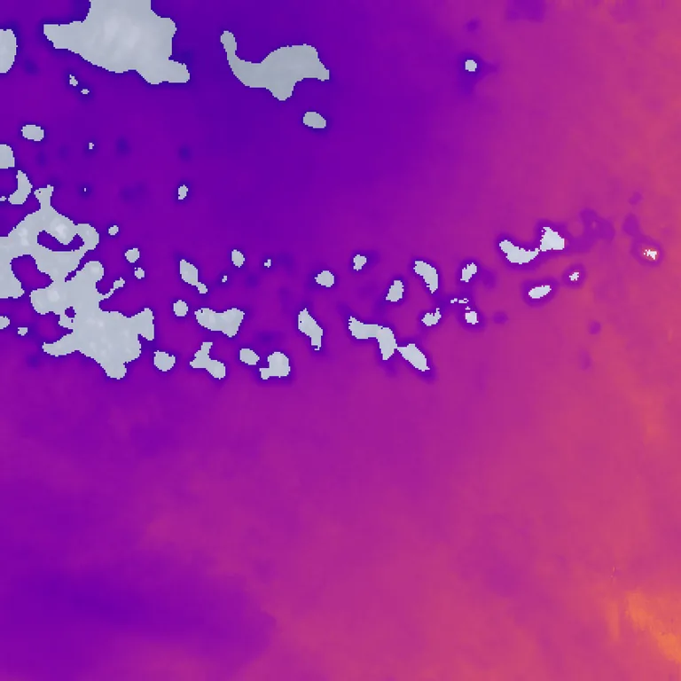

Benchmark / Use cases / Ice effective radius / Results / T44PNB-20230828
T44PNB-20230828

Ice effective radius retrieved by Clouds Decoded where the cloud is ice, from 15 µm in blue to 45 µm in yellow, over the true-colour crop.
Sample
| surface | ocean |
|---|---|
| regime | thin cirrus |
| product | S2A_MSIL1C_20230828T045701_N0510_R119_T44PNB_20240907T141352 |
| col_off | 1140 |
| row_off | 4740 |
Compression ratio and ice effective radius
Each point is one level of a codec, named when you point at it, on this sample.
GeoZL PIVCOGeoZL PFORJPEG XLgeorvq